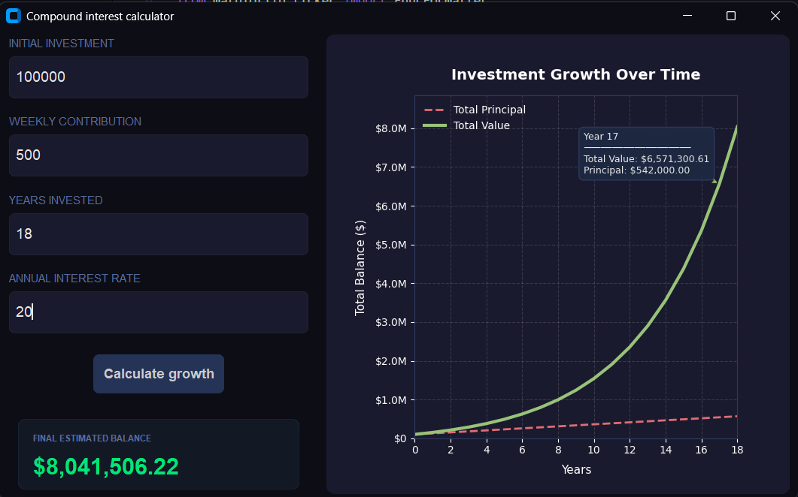
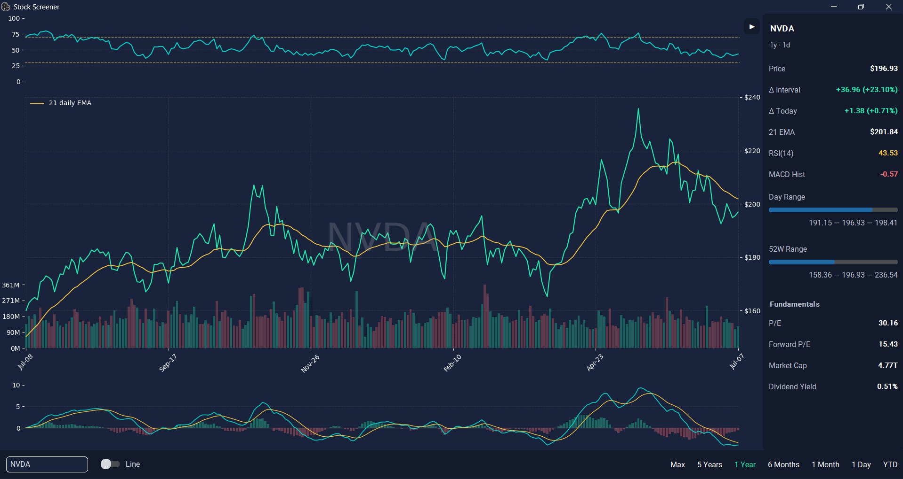
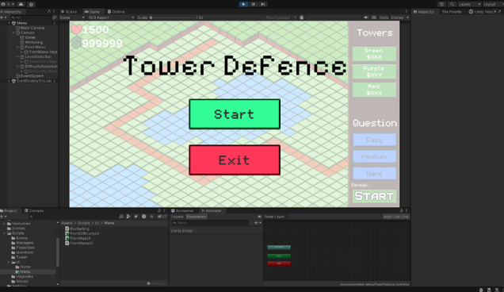

I am a Software Engineering (Honours) student at the University of Auckland, passionate about building robust, high-quality software solutions. My interests span backend programming, algorithmic systems, and engineering software with a focus on clean design, performance, and security.
Bachelor of Engineering (Honours) in Software Engineering
The University of Auckland (Expected Graduation: November 2028)
Here are some of the technical projects I have built:
Tech Stack: Python, CustomTkinter, Matplotlib, NumPy
A cross-platform desktop application designed to model and visualize long-term investment growth. Built with strict input-validation layers to entirely eliminate user misinput errors. It leverages NumPy for optimized compound interest array mathematics and integrates a Matplotlib plotting engine to render real-time, responsive data graphs.

Tech Stack: Python, CustomTkinter, yfinance API, Pandas, NumPy, Matplotlib
A dynamic desktop analytics dashboard that consumes real-time market data via the yfinance API to evaluate and filter equities. Engineered a custom data-pipeline using Pandas and NumPy to compute complex financial indicators including Exponential Moving Averages (21 EMA), Relative Strength Index (RSI-14), and Moving Average Convergence Divergence (MACD). The front-end leverages Matplotlib object-oriented plotting to cleanly render multi-pane technical charts alongside custom UI control features.

Tech Stack: C#, Unity, Unity UI, State Management
A strategic tower defense game built in Unity featuring pathfinding enemy waves, upgradeable defensive structures, and an integrated gamified economy loop. To generate in-game currency, users solve algorithmically generated mathematics problems categorized by difficulty tiers (Easy, Medium, Hard), mapping higher cognitive difficulty to greater economic rewards.
Recognition: Awarded a New Zealand Digital Technology Scholarship (2024) based on the comprehensive architectural design, user-testing iterations, and implementation documentation.

Feel free to reach out to me through any of the platforms below:
Resume:
📥 Download My Resume (PDF)